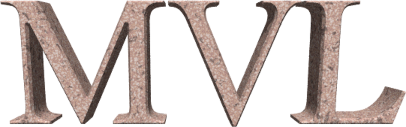

Information
MVL is an OCaml library for manipulating and evaluating expressions in
several common multivalued logic systems.
Documentation
Module-specific documentation pages:
Build and Installation
To start, clone the GitHub
repository. MVL uses dune as its build system. Run dune build to
compile, and dune install to install.
Development
Source code is available on GitHub.
License
MVL is free software under the GNU GPL v3. You are
free to copy, modify, and distribute MVL under the terms of this license.
Copyright © 2021 Matthew Kukla,
<matt.kukla [at] yandex.ru>.
Back | Home